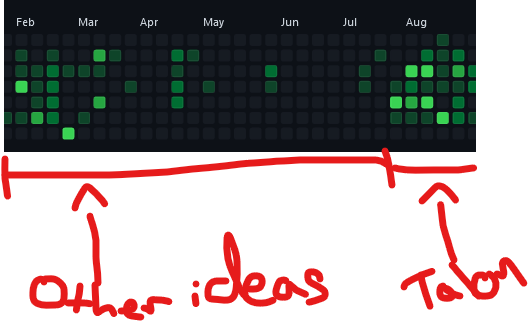

Hello!
I'm Stefan du Fresne
I'm a software developer from New Zealand. I currently live in London, England.
Over the last few years I've helped to build a reasonably large amount of software. Java -> Scala -> Javascript / Typescript, with a side helping of Clojure and Rust.
Currently…
Working on mitigating my RSI. A constant niggle throughout my career, I decided it was time to fix it once and for all. After trying different strategies, I've landed on coding by voice, via the astonishingly effective Talon.
Talon combined with Cursorless (incredibly fast Vscode editing) and Vimium (vim bindings for your browser) is a remarkably effective toolset for hands-free computing, as least as far as web browsing and coding is concerned.
To put it to the test, I built Sanremo (src), an experiment in repeatable checklists by way of an offline-first PWA.
As you can from my highly scientific graph, Talon works a treat!
I still use my hands for some navigation and occasional editing, but Talon means I no longer need to rely on them.
Previously…
Medic; a non-profit building open source tools to help Community Health Workers worldwide bring doorstep medical care to their communities; as a software developer and later, the engineering manager.
Anything else?
I'm not very active on social media, but you can see my socials (and a more comprehensive job history) to the sidebelow.